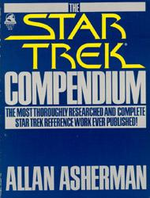
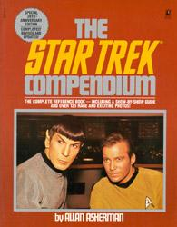
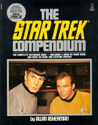
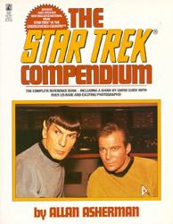
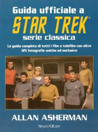

The Star Trek Compendium |
|  |
|  |
|  |
|  |
|  |
| AUT | Allan Asherman |
| PAG | 184 (copertina rossa) |
| EDI | Pocket Books, 1981 (copertina blu) Pocket Books, 1986 (copertina rossa) Pocket Books, 1989 (copertina nera) Pocket Books, 1993 (copertina bianca) |
| ISBN | 0-671-62726-0 (copertina rossa) |
| Edizione italiana: | Guida ufficiale a Star Trek serie classica |
| TRA | Paola Cartoceti |
| PAG | 220 |
| EDI | Fanucci, 1998 |
| ISBN | 88-347-0635-8 |
Guida ufficiale ai 79 episodi della Serie Classica, con riassunto dettagliato
delle storie, dietro le quinte e testimonianze delle persone che hanno lavorato alla produzione.
L'edizione con la copertina blu è aggiornata al primo film; l'edizione con la copertina rossa è
aggiornata al terzo film; l'edizione con la copertina nera è aggiornata al
quinto film; l'edizione con la copertina bianca è aggiornata al sesto
film.